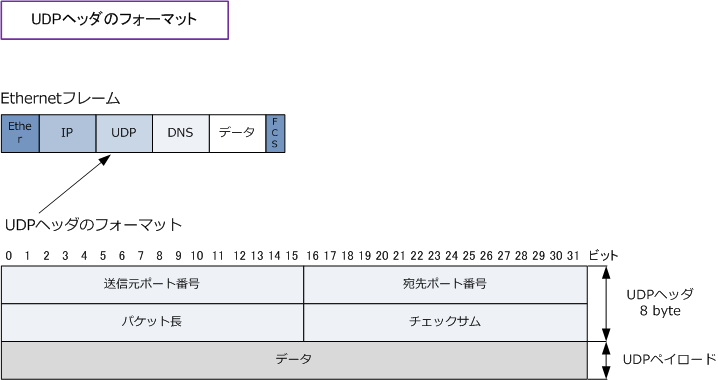

UDP
UDPとは
UDP (User Datagram Protocol) とは、IPやTCPなどと同様にインターネットにて標準的に利用されている プロトコルです。UDPはIPの上位プロトコルでトランスポート層で動作するプロトコル。ネットワーク層の IPとセッション層以上のプロトコル（ 例：DNS、NTP、DHCP ）の橋渡しをするかたちで動作しています。
UDPのポート番号の考え方についてはTCPと同様です。しかし、TCPのように3way handshake、確認応答 順序制御、再送制御、ウィンドウ制御、フロー制御などの機能はなく、ほとんど何もしないプロトコルです。 UDPは、TCPと比べて信頼性が高くはないが、速さやリアルタイム性を求める通信に使用されるプロトコル。
※ TCPは、コネクション型通信（通信開始前に相手との間で仮想的な通信路を確保する）を行います。 ※ UDPは、コネクションレス型通信（通信開始前に相手との間で、事前のやり取りなし）を行います。
UDPヘッダのフォーマット

| 各フィールド | ビット数 | 各フィールドの説明 |
|---|---|---|
| 送信元ポート番号 | 16 bit | 送信元のポート番号の値。 |
| 宛先ポート番号 | 16 bit | 宛先のポート番号の値。 |
| パケット長 | 16 bit | 「UDPヘッダ」の長さと「UDPデータ」の長さを合計サイズの値。 |
| チェックサム | 16 bit | UDPヘッダとデータ部分のエラーチェックを行うために使用される値。 |
UDPの特徴
UDPは、コネクションレス型のプロトコルであることから、TCPに比べると信頼性がないものの高速に転送を 行うことができます。また、UDPヘッダサイズ（8byte）が少ない事から、その分アプリケーションのデータを 多く送受信することができます。ただし、パケットが到達する保証がないことから、パケットロスなどの場合 アプリケーション側で再送処理をして通信を成立させるかパケットロスが容認できるアプリの必要があります。
UDPの用途
① 音声や映像などのリアルタイム性のあるデータを転送する場合 音声のデータを転送する場合、TCPのようにデータを送るごとに確認応答をしているようでは、音声通話が 途切れたり、聞き取れなかったりしてしまいます。このようなリアルタイム性が求められるデータ通信では 信頼性よりも高速なデータ転送の方が求められます。従って、音声通信ではUDPの方が品質が高まります。
② 複数の相手に同じデータを同時に転送する場合 TCP通信では、通信相手と1対1でコネクションを確立する必要があるのでユニキャスト通信しかできません。 １つのパケットを複数の宛先に送るようなマルチキャスト通信やブロードキャスト通信では、TCPを使用する ことができません。このように1対Nの通信を行うためにはコネクション確立の必要がないUDPが適しています。
③ 信頼性が必要なく、少量のデータ転送をしたい場合 例えばDNSサーバとのクライアントPCとのデータ通信は、クライアントPCからの1回の問い合わせとそれに 対するDNSサーバからの応答１回のデータ伝送で通信が完了します。このようなやりとりに3way handshake で3回のやりとりをしていては効率が悪いです。少量のデータ転送で完了する通信にはUDPが適しています。
TCPとUDPとの比較
| プロトコル | TCP | UDP |
|---|---|---|
| 通信方式 | コネクション型 | コネクションレス型 |
| 信頼性 | 高い | 低い |
| 転送速度 | 低速 | 高速 |
| 上位プロトコル | HTTP、Telnet、FTP、POP・・・ | DNS、NTP、DHCP，SNMP ・・・ |
| 主な用途 | Webの閲覧、メールの送受信、ファイル転送、共有 | 音声通話、Videoストリーミング、マルチキャスト通信 ブロードキャスト通信、少量のデータ転送 |
| 主な特徴 | ・ ポート番号を利用した上位プロトコルへの データの受け渡し ・ コネクションの確立、維持、切断 ・ 順序制御、再送制御、ウィンドウ制御、フロー制御 |
・ ポート番号を利用した上位プロトコルへの データの橋渡し ・ オーバーヘッドが少ない （ ヘッダが8byte ) ・ 信頼性がない (パケットロスしても再送しない等） |